开盘前的期货市场和开盘一起建立走势
- 如果看到强大的第一浪后，一直徘徊一晚上，那么第二天应该努力寻找和第一浪方向相同的走势。
比如反向加速或者快速运动的走势。一旦发现，就应该进入。
- 开盘后的走势，如果结合开盘前的走势，可能是一个走势的最后阶段，也可能是第一阶段。所以要仔细观察，到底是哪一阶段。不要有任何偏见。
- 如果在半夜的走势中出现了加速见底或者加速见顶的走势，那么开盘后，会把这个当作底部或顶部。
- 大盘大跌后，在底部走平4个小时以上，一直到开盘。或者大盘大涨后，在顶部走平4个小时以上，一直到开盘，可以做多/做空。除了这种情况。
不要提前做。而要等待开盘后的走势。曾经在半夜出现了5浪上涨，结果开盘后，仍然大涨。所以开盘前的走势不能作数。有时候可以限定一个范围。
- 在大幅高开，或者大幅低开的时候，如果是近几个月的新低或者新高，那么出现一个走势后，可以盘前操作，它会是未来几天的
顶部或者底部。
- 盘前走势因为成交量很低，所以不能作为一个走势的强度标准。一个走势的强度仍然却决于开盘后的情况。它可以决定开盘后的方向，
但不是强度。
- 盘前走势会有很多上影线或者下影线。这些线不能算到达了某个点，而是应该看它实际的运动范围。
- 刚刚开盘后的第一浪的方向有时和开盘前方向一致，特别是开盘前有强大的第一浪的时候，这时要注意，这个就是第一浪的延续，可以想象，
把开盘前的走势也放进来。有时候，甚至需要把前两天的走势放进来一起考虑。
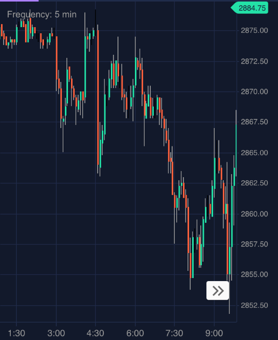
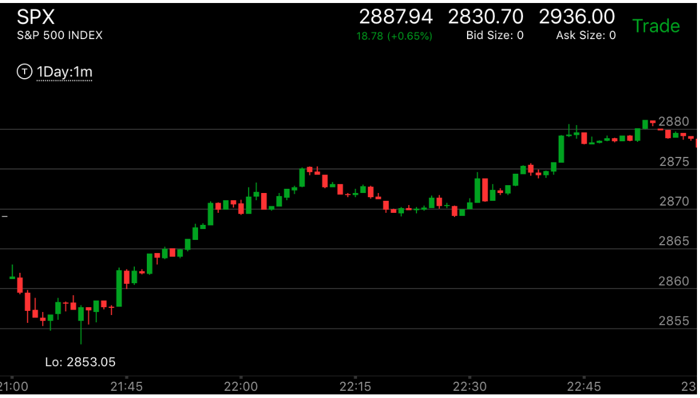
图示:盘前下跌，出现了加速下跌。7：40就是一个加速。开盘后，第一个bar是上涨，然后连续下跌。
这个本身也构成了加速下跌。这样一旦走平，就可以做多了。它从底部走平很久，超过了下跌的时间，然后快速上涨，形成了升势。
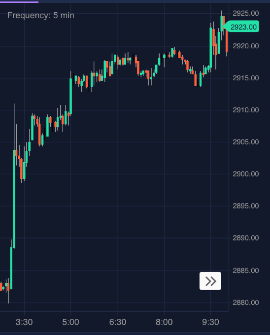
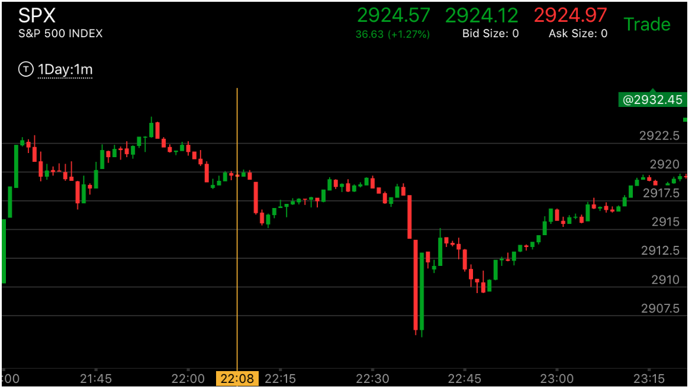
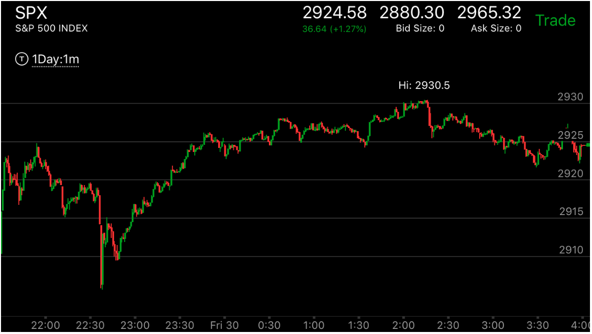
图示:从盘前走势看，它似乎处于跌势。3：20的上涨不算加速，但是3：40的上涨是加速。
开盘后也是加速。
但是开盘后，它在21；55的新高下跌速度要大于21：40的高点下跌，这样表示未来一定会高于这个点。然而，它下跌的时候，
不断的走平，下跌，时间拖的很长。表示，它未来一定会低于开盘的低点，2910.22：40它突然大跌，跌破了2910.立刻大幅反弹，
这个反弹不是下跌后的反弹，反而是上涨的第一浪。它再次加速上涨，22：40下跌，反而造成了加速下跌。开始了缓慢的上涨。
要考虑，它的上涨速度不但低于22；40开始的下跌，也比22：31开始的下跌慢，所以它一定会超过这些点的。
但是从盘前走势看，它又是跌势。所以它的上升幅度也有限。1：30开始加速上涨，两次加速，走平，开始了反转。
但是由于强大的第一浪上涨，它的反转也是部分反转。
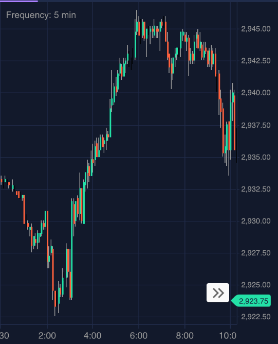
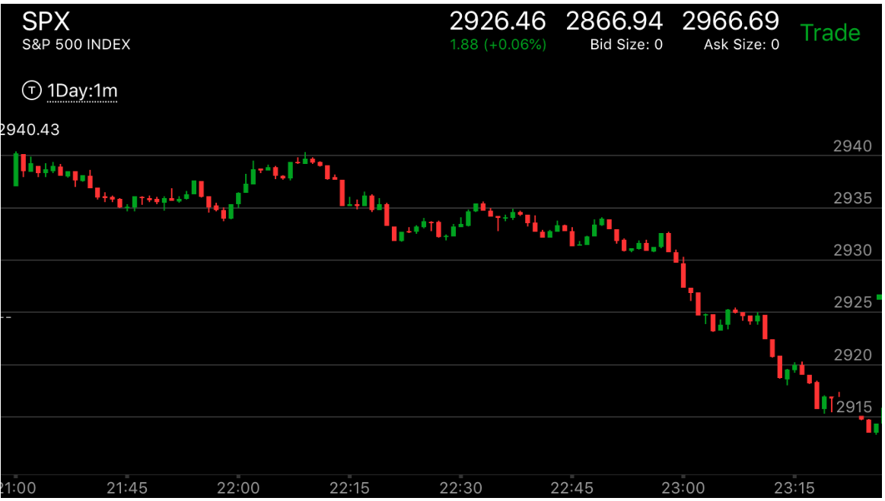
图示:凌晨3点多加速大涨，然后后面不断的加速上涨，说明可能市场处于跌势。
开盘后，第一分钟上涨，立刻下跌，走出两段走势后，快速反弹。反弹的第一段就是一个加速走势，因为它速度很快。
走平几分钟后，22：10再次加速上涨，恰好和开盘一样高。可以看到，它用的时间比下跌更短，却没有突破。它在高点
停留时间比开盘长。这样就形成了第一个顶比第一个顶平缓的走势。这个是大跌走势。
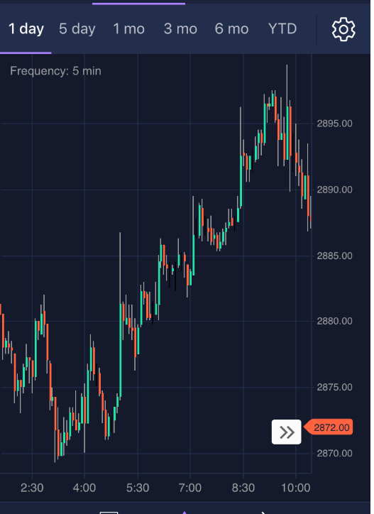

图示:凌晨4点开始，它不断的上涨，出现回调，到了开盘前，它出现了上涨，不回头，继续上涨，形成了加速走势。
这样就是一个跌势了。开盘后，它出现了一个疑似两段上涨走势，下来后，再次快速上涨，创新高，形成了加速走势。21：50大跌。幅度很大，速度很快。
这个就是下跌的第一浪了。全天后来大跌。跌幅很深。
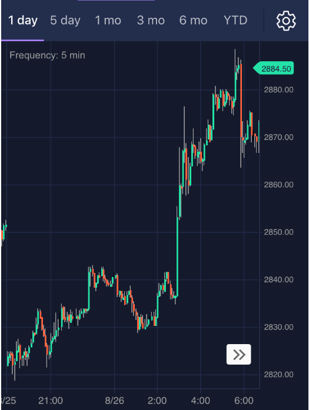
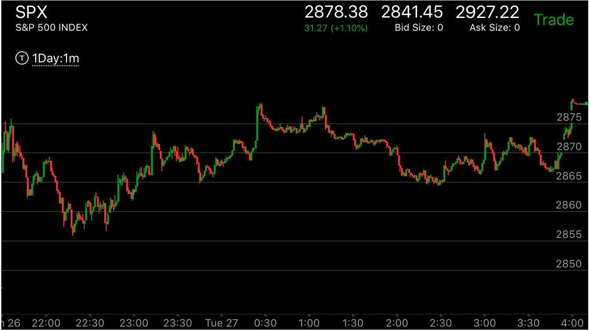
图示:盘前出现升势，不断上涨，到了高点后，快速下跌，说明不是顶点。仍然处于升势。开盘后，上涨，拉回再次上涨，
快速拉回。第二次拉回的速度很高，速度高于第一个顶点，说明不是顶部，然后不断走低，创新低， 22：20两次加速下跌后，开始上涨。一定会超过开盘高点的。
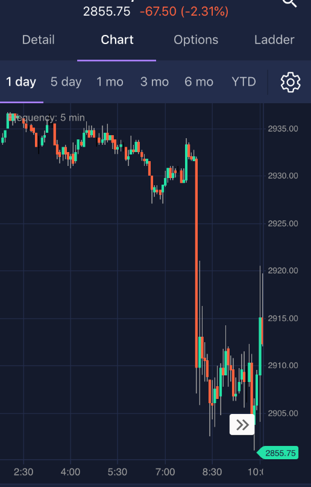


图示: 盘前出现了第一浪大跌，开盘后，它却出现了很小的下跌。这个说明开盘后的走势不一定要和盘前一致，
但是方向一致。它下跌后，反弹，不断反弹，填补了真空在2927附近。然后暴跌。从开盘后走势看，它在21：50缓慢创新低后，迅速反弹。这个本身就不是一个
底部的样子，如果结合盘前走势看，它是一个大跌后，两段反弹上涨，填补真空后，继续大跌的走势。
另外，它在22：40大跌后，虽然幅度远远超过了盘前的下跌，但是并没有反转，而是不断下跌直到收盘前。说明只看幅度是不能用来反转盘前走势的。
而是要看具体的走势。23：00大跌后，它不断的出现了快速反弹，缓慢下跌的走势。说明会不停的下跌。
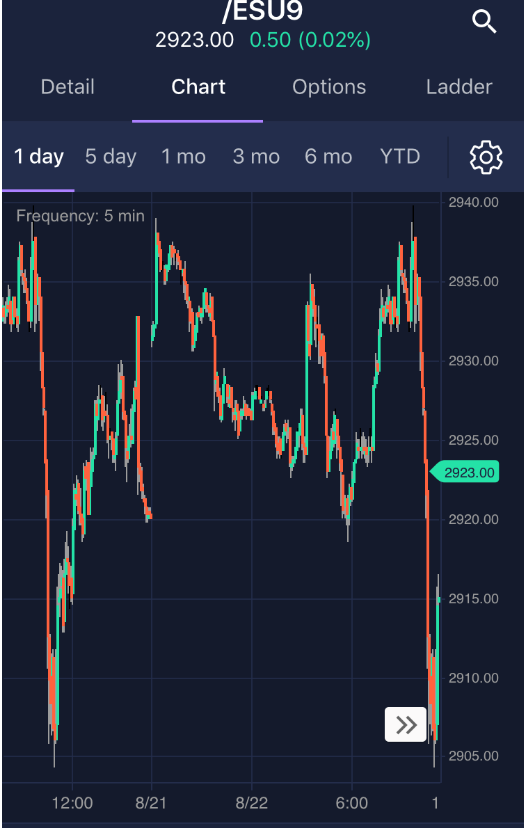
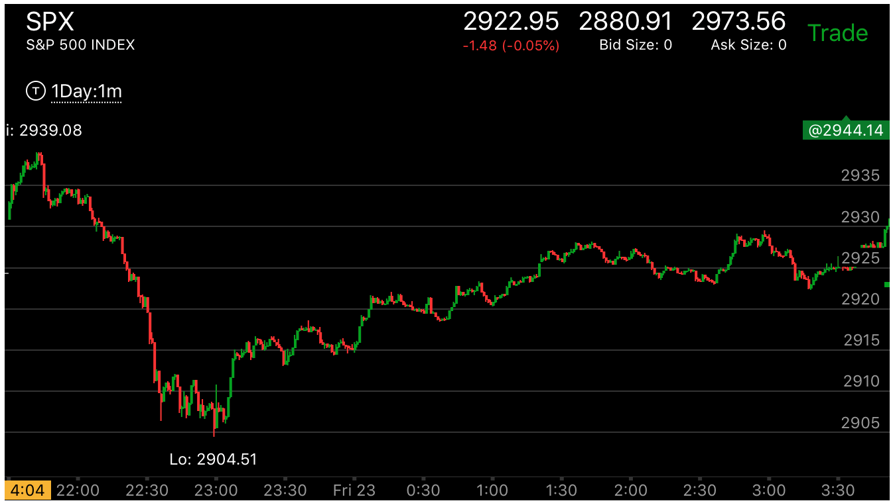
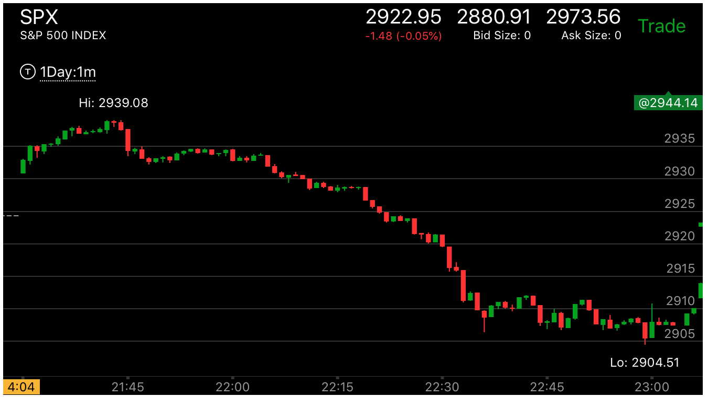
图示：这个走势要追述到两天以前了。两天以前出现了大幅的快速下跌。而当天开盘出现了两次加速上涨，
开始下跌，下跌的位置，恰好是两天前反弹的位置。然后反弹。高点恰好是两天以前的高点，而低点也是两天以前快速下跌的低点。
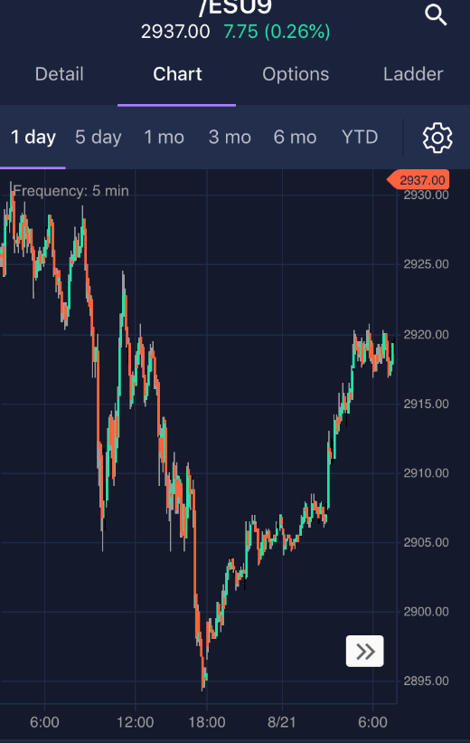
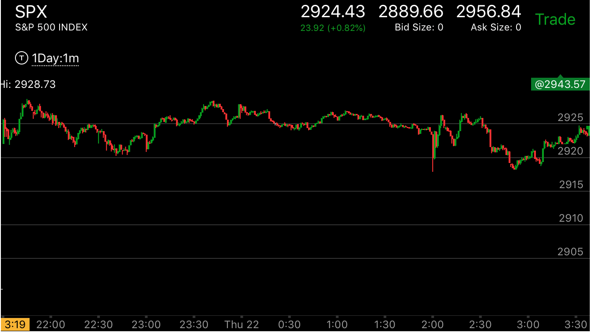
图示：盘前18：00出现了底部，然后缓慢上涨。直到开盘也没有超过2925.但是这个变得有些模糊。
开盘后，它在一个狭窄的范围内震荡，结束。一方面，它处于升势，另外一方面，它在更大的市场处于跌势。无法突破2930这个点。另一方面，它
又很难跌破2920这个点。
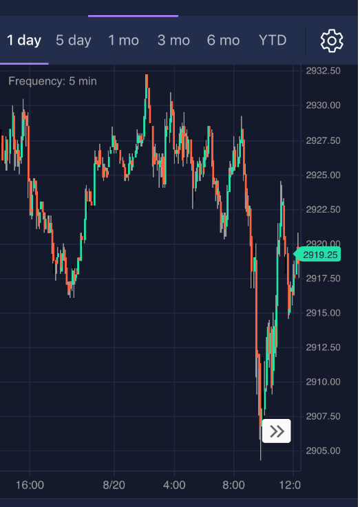
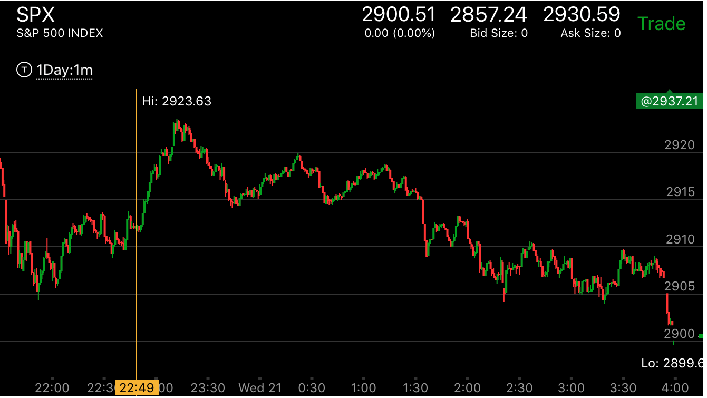
图示：开盘前，似乎处于跌势。17：00出现新低后，很快的反弹回到高点。这样的走势不太像真的反转。
8：00开始下跌。一直持续到了开盘。开盘后，连续下跌。出现了两次加速后，反转。创新高。但是因为趋势仍然是跌势。所以，它刚刚破新高后，
就开始跌了。
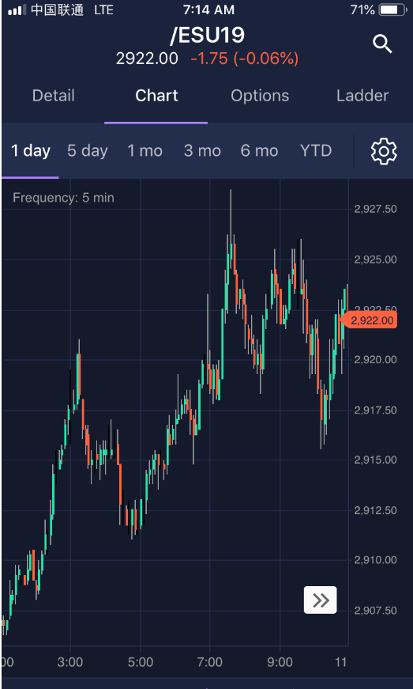
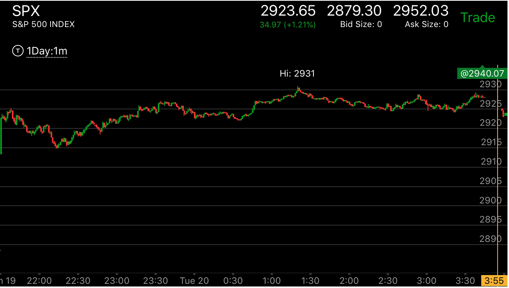
图示：开盘前处于升势，7：30达到高点后，立刻下跌，可见没有到达顶部。仍然处于升势。
开盘后，冲高，然后下跌。后面不断走低，在22：20出现了快速下跌，这样形成了加速走势，下跌结束。从两方面看，都可以看到大盘处于升势。
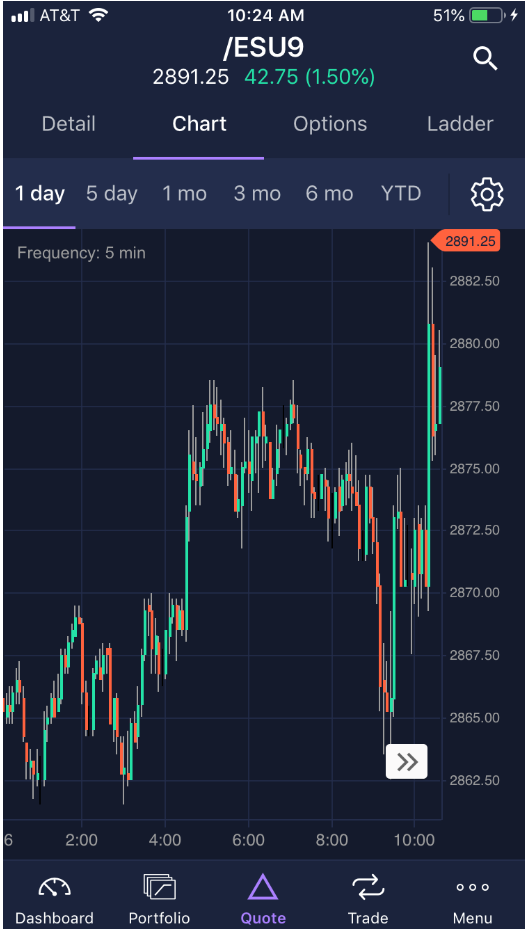
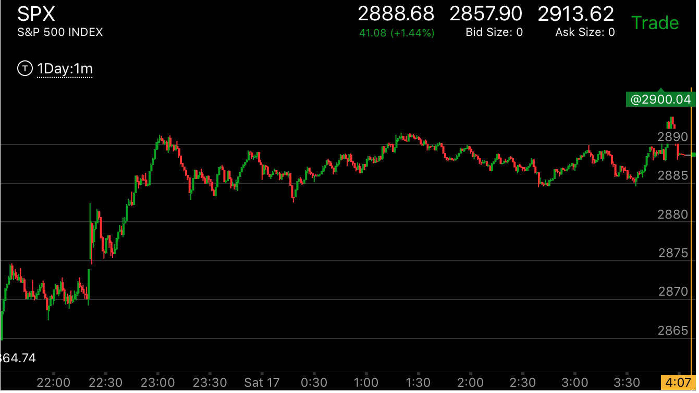
图示：开盘前，出现了疑似的两段上涨。但是实际并没有到达顶部。它在开盘前快速下跌，然后反弹。这样就来到了开盘。
开盘后，它冲高，它的冲高点恰好到了前面的快速下来的起点后，开始走低，这样如果结合来看，它相当于在这个点开始震荡。这样就形成了一个升势。
从开盘后的情况来看，它冲高后，立刻走低，然后不断走低，然后出现了两段下跌走势，再次加速下跌。这样它本身就形成了一个跌势的结束。22：20的时候，它
快速上涨，突破2880.形成了升势。
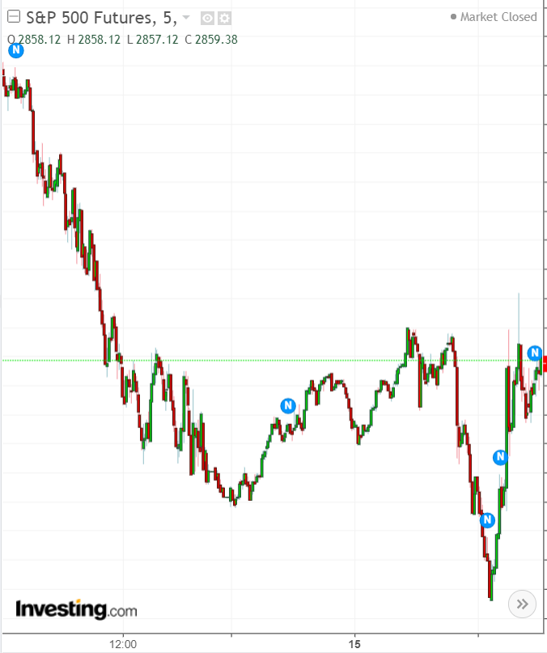
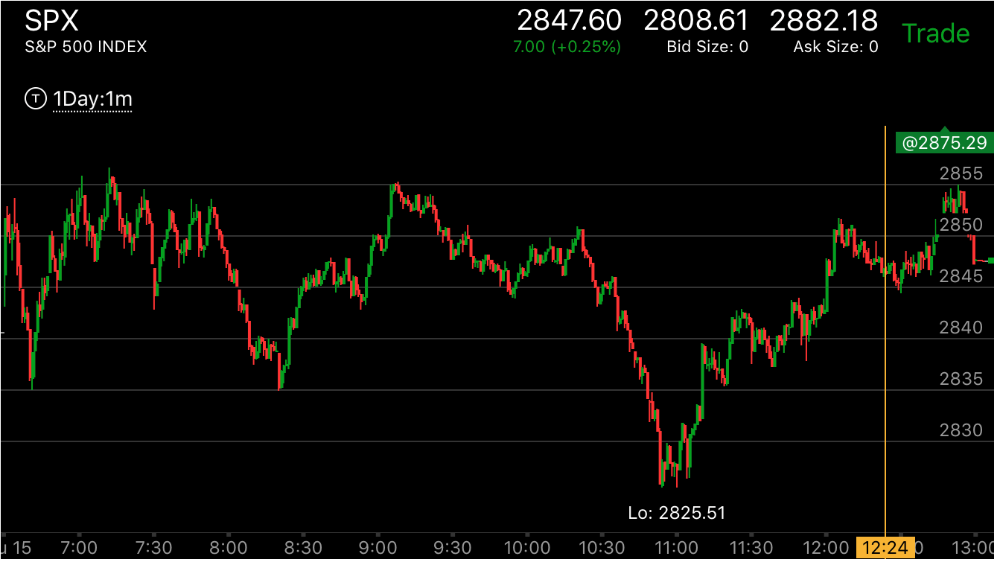
图示开盘前，出现了一个 绿色的快速上涨的bar，从盘前其实也无法判断升势或者跌势。其实可能处于跌势。开盘后，
它一开始是处于上升的，它立刻走低，创新低。但是其实结合盘前走势，它是在填补真空，然后上涨。上涨后，它和盘前的阻力点一样高，其实处于跌势。
7：30 它快速下跌，然后拉回。7：50它开始缓慢下跌。可以想到，它一定会大跌的。8：20下跌后，它再次冲高，8：50出现了一个两段上涨走势。
这样它再次反转。这次反转，它徘徊了一个多小时，也没有越过2844这个两段走势的起点。可见，它会大跌。它大跌后，在2825出现了加速，而这个点，恰好是
盘前走势的反弹点。这样再次反弹。大盘大涨，直到收盘。这一天大盘就在一个范围内震荡。而震荡范围被盘前所确定。
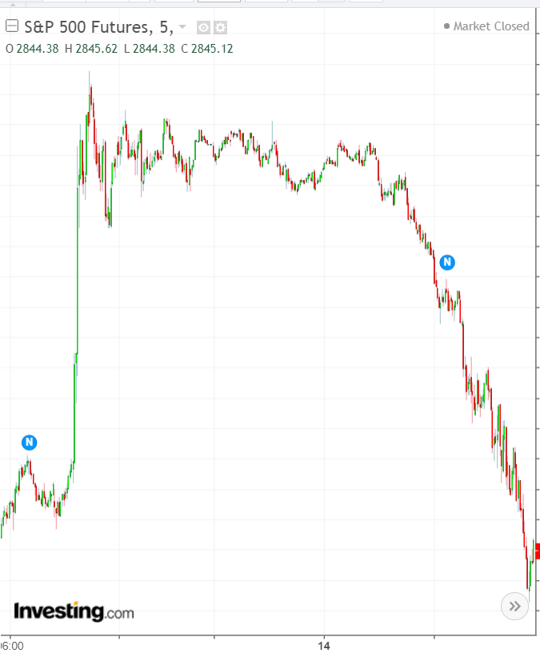
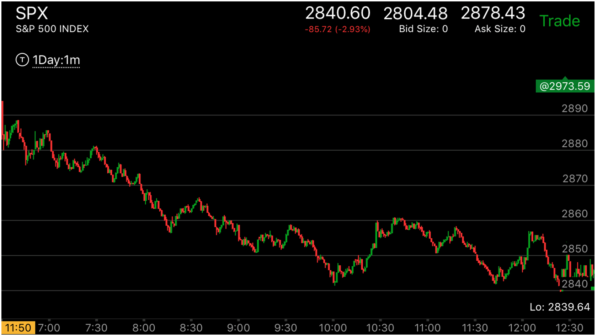
图示：前一天在开盘后，大盘大涨，没有任何停顿。收盘后，大盘不断的走低。中间似乎是跌幅很大。好像一个见底的样子。但是又再次走低。
这种一个台阶一个台阶的大跌或者大涨是不能反转的。不能看到它跌幅大，就反转。在这个走势当中。它可能是是反前一天快速大涨的走势。所以会大跌。这样一个台阶一个台阶的跌。
一定会低于快速上涨的起点。所以不能抄底。
开盘后，它出现了很长的大跌。这个可能是最后一浪大跌。也可能是第一浪下跌。在这个情况下。它出现了反常两段走势。然后反弹。这样就成了强大的第一浪。它下跌的时候，速度很慢。
没有加速。这些都是一个大跌走势的样子。所以一定会跌。应该做空。
 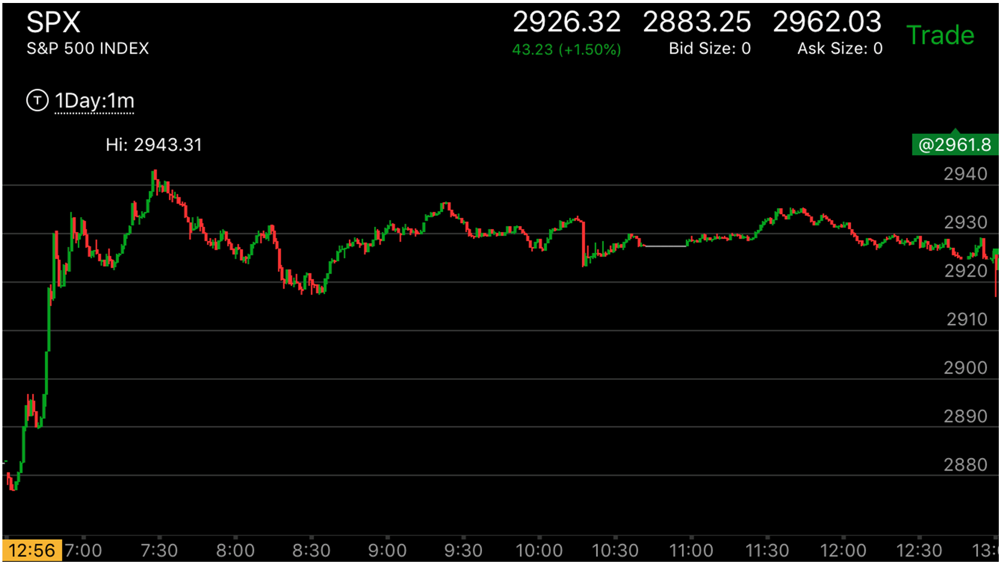
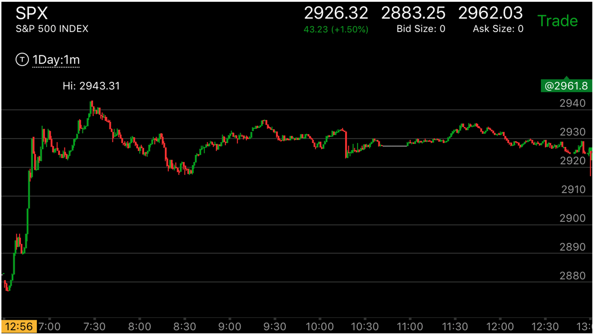
图示：开盘前，1：30从2990大跌，跌幅是15个点，大幅反弹后，再次快速下跌。下跌的幅度正好是15个点，但是下跌速度要快的多。这样
大盘已经反转了。它一直没有越过两段走势开始的点。一直徘徊到开盘。开盘后，它慢慢下跌两分钟。然后大幅上涨。这个其实就是第一浪。这个是大盘开盘后，以自己的方式来宣布第一浪
的样子。这样也符合盘前决定方向，盘后决定具体形状的原则。大盘冲高后，回调，恰好在2890停止，这个点如果不看盘前走势，无法理解。因为这个点是盘前的走平点。
这样的冲高，形成了对盘前的跨越走势。然后继续大涨。
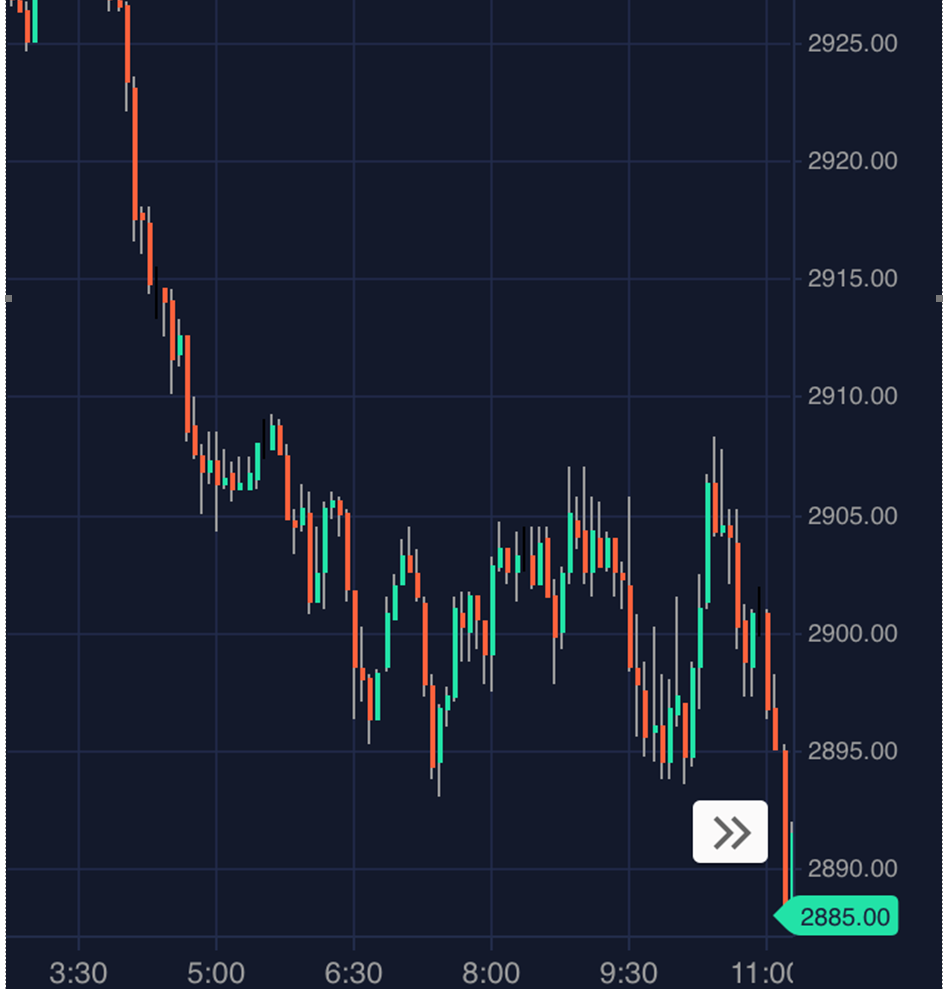
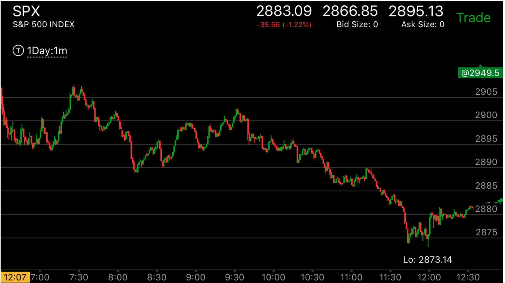
图示：开盘前，出现了大幅的第一浪下跌。后面似乎出现了两段加速走势。6：30算第一加速，7：00的不能算，
因为它向下后，立刻反弹。没有在底部停留。5：45的下跌不算向下加速，因为它停留了几分钟，然后向下。这样，这个第一浪没有反转。开盘后，不断的走低，
然后反弹，反弹刚刚越过开盘高点后，就转折了。这个就是开盘后所定义的高点。它刚刚越过高点就算是加速了。从盘前走势看，2905也是一个走平的点。
所以它越过这个点就反转也是合理的。
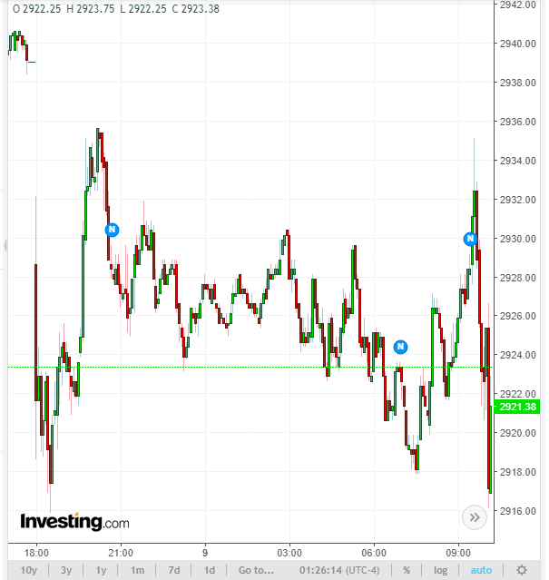

图示：前天晚上，大盘大跌后，快速反弹走出了一个两段上涨走势。
但是它的反向走势一直没有越过两段上涨的开始。说明未来会跌。在徘徊了一夜后，它仍然处于跌势。
但是它开盘后，出现了一个小的两段上涨走势后，开始大跌。
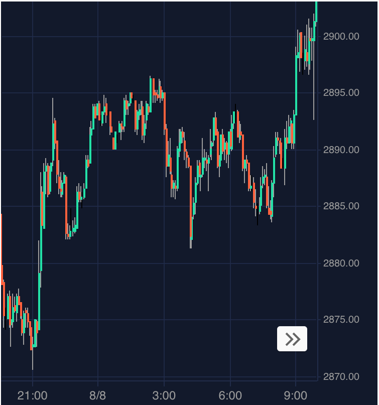

图示：前一天晚上，大盘一个两段下跌后，21：00出现了一浪上涨，这个上涨走势，
徘徊了一整夜，也没有爆发。早晨的时候，开始上涨，开盘后，它上涨，然后快速下跌后，7：00快速上涨，形成了很强的第一浪，
然后缓慢的上涨，一天都在上涨当中。收盘大涨。
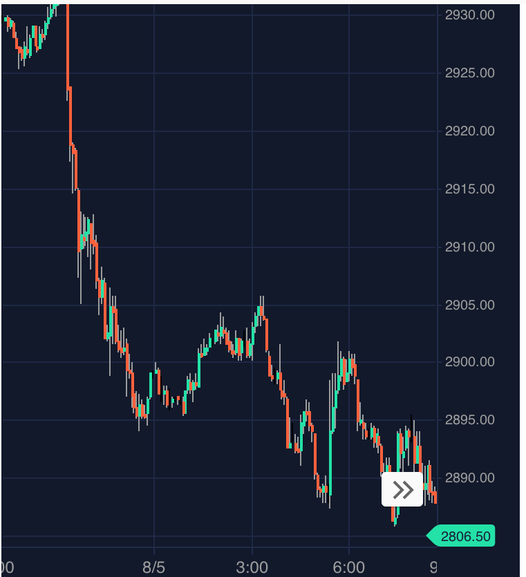
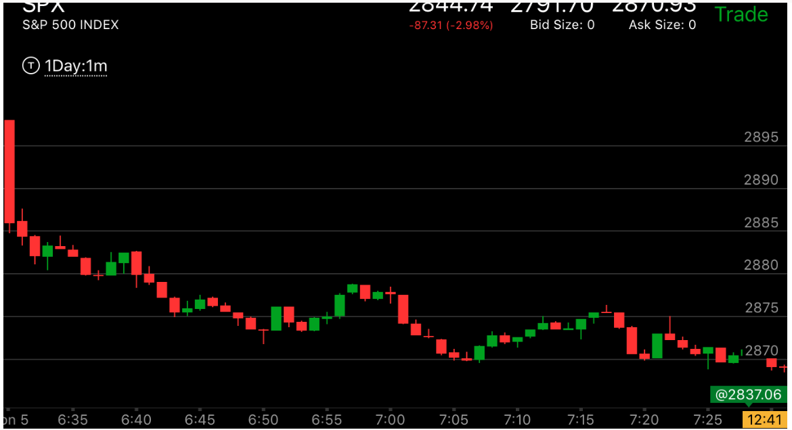
图示：盘前走势，它大跌，形成了强大的第一浪。而它后面一直都没有两次加速。
每次跌一些，就快速的大幅上涨，然后再次创新低。一直到了开盘。这样开盘其实仍然处于跌势。
可以再等一下，虽然低开了40个点。它仍然低开低走。而且低走的时候，一直没有两次加速。这样就成了强的第一浪走势。

图示：开盘后，大幅冲高，没有任何回调，继续走高。虽然可以从它走平的样子看出来，
但是它这样走高也是很奇怪的。但是如果结合开盘前的期货走势，就可以理解了。
它在开盘前，快速大幅突破，创新高。然后立刻拉回，速度更快，然后开始上涨。涨到开盘。这个说明它处于升势，
一定会超过前面的快速拉回的高点的。

图示：开盘后，下跌。出现了跌势。然后反弹。走平。似乎是一个跌势。但是如果看盘前走势的话。它
再开盘前，从2897附近跌下来。2897是个阻力点。所以这个走势变成了两可走势。应该等待它确实出现了低点再去做。
它大涨到了盘前走势的高点，才大跌。直到收盘前才到了这个低点附近。就这个走势本身而言。它也不一定是一个跌势。它其实是前面的跌势的最后阶段。
连续下跌三分钟。后面30分钟都在这个区域震荡。直到创新高后，也回到这个点的顶部。

图示：晚上的期指交易出现了5浪上涨。我以为开盘会跌。结果它大幅走低一分钟后，暴涨。
但是其实5浪上涨不一定就跌，要看5浪具体的样子，如果后面的两浪没有很大，也没有跨越，那么不会下跌，反而是酝酿的样子。